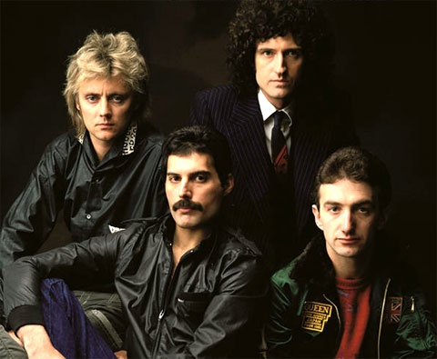

Historia
Banda de rock británica que gozó de gran fama desde mediados de los setenta y durante toda la década de los ochenta; la espectacularidad y dinamismo de sus actuaciones y la asimilación al rock de tendencias jazzísticas, sinfónicas y operísticas fueron algunas de las claves de su éxito, tan abrumador que sus discos fueron superventas incluso después del fallecimiento en 1991 de su líder, el cantante Freddie Mercury. Creado en 1970, el grupo estuvo formado por Freddie Mercury (voz), Brian May (guitarra), Roger Taylor (batería) y John Deacon (bajo). Los orígenes de Queen se remontan al inicio de los sesenta, cuando el joven guitarrista Brian Harold May (nacido en 1947) comenzó a tocar en un grupo semiprofesional llamado 1984.
